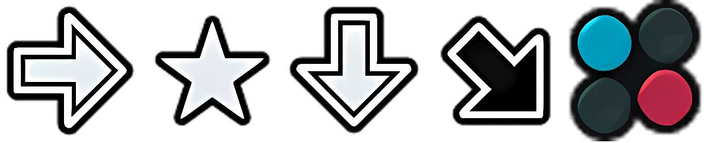

ARM BREAKER

hold 1, if there is [STANDING CLE DE BRAS DERRIERE](CWFL) hold 2 for avoid (RDC)

STANDING HEEL HOLD

hold 1. If fail, ALWAYS hold 1+2.
Thought process on STF vs KB:
(success*damage) = Expected Value
STF (50%*30) = 15dmg.
KB (50%*60) = 30dmg.
(( STF is actually (25%+25%)*30 because SDL is also 50%*30))
It will be more accurate to do something like Expected Value = (success*damage) - (volatility*execution). But with only (success*damage), we can say that statistically, countering KB is twice as rewarding.
It's like you sit down at a roulette table but red pays 2x than black. So you b et every time on red, losing your money slower than betting on black. Now, you can bet more often because you lose less on lose, and you gain more on win. Now that you are always winning on betting red, imagine the roulette dealer can ma ke any color they want. This is the situation we are in SHH, but the twist is that the dealer is maybe not capable to notice or rig the roulette.

(REVERSE ARM SLAM + REVERSE SPECIAL STRETCH BOMB)
both around same damage. hold 1 or 2. there is 2untechable here + no visual difference for input, he can spark blu even when mashing. don't lose patience.
(TACKLE)
---
(COBRA CLUTCH)
hold 1 after (COBRA TWIST). hold2 after backdrop.
X->1or2->1or2->X->1or2->1or2.
So we have :
hold1: it beat mash + 45% of throws (11/24 without tackle).
hold2: 45% of throws (11/24 without tackle).
BUT
if you can notice when CWFL, you boost you keep 45% of throws and tradeof the risk to lose 25hp to save 60hp.
In my opinion, there are some paths that are just worse, not worth learning, nor within the scope of a mind game—unless it's a FT100 :
(ArmBreaker->HeadJammer)
(ArmBreaker->CWFL->DragonSleeperFinish)
(StandingHeelHold->ScorpionDeathLock)
so if we remove them intentionally and subjectively we now have:
hold1: it beat mash + 43% of throws (10/23 without tackle).
hold2: 39% of throws (9/23 without tackle).
but if you hold1 and if you can (should) notice CWFL, you are now at 47% of throws (11/23 without tackle).
So TLDR;
hold1 at all cost.
If King CWFL(He is standing behind & Chicken Wing) you quickly hold 2 this time.
If King SHH(He is Standing and he Hold your Heel) then King's Bridge, hold 1+2 every time now because hold1=save 30hp hold1+2=save 60hp.